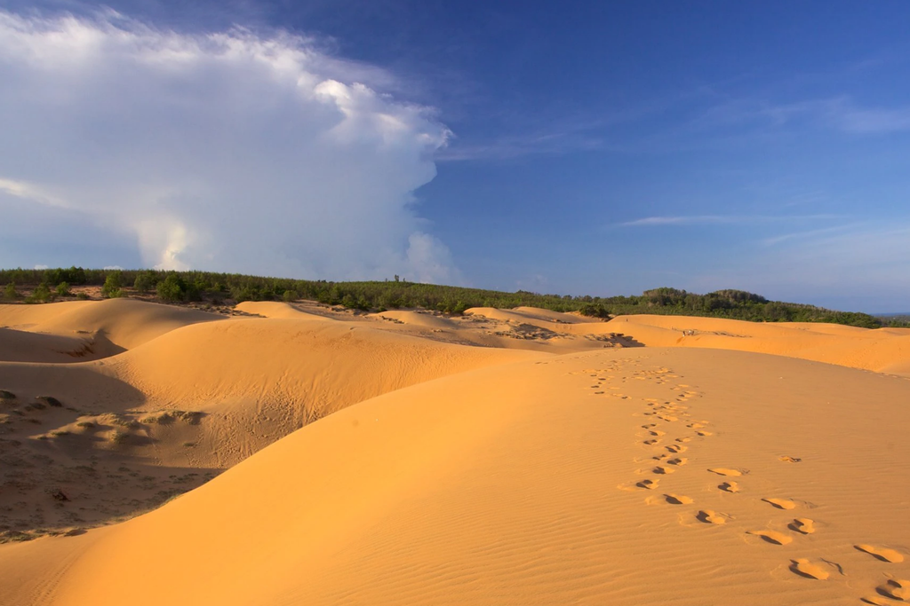
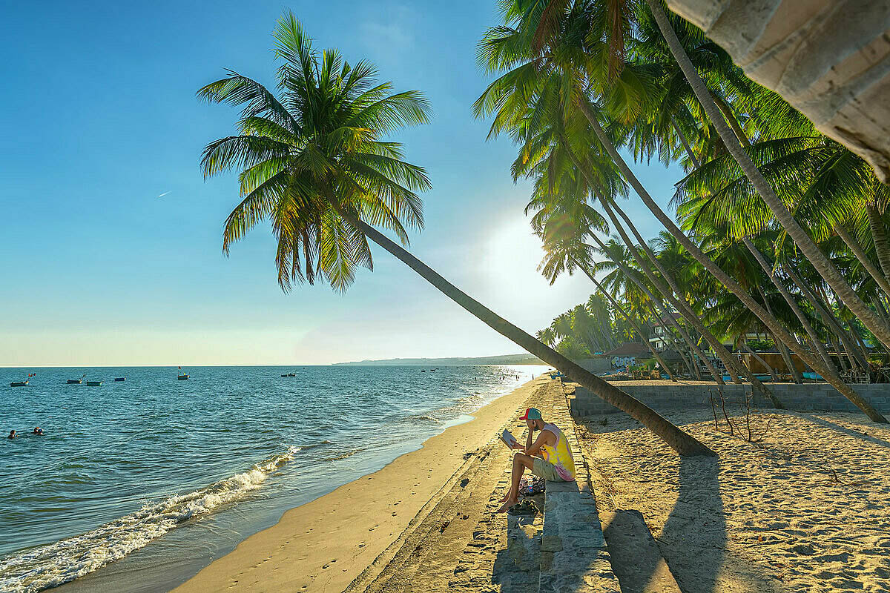
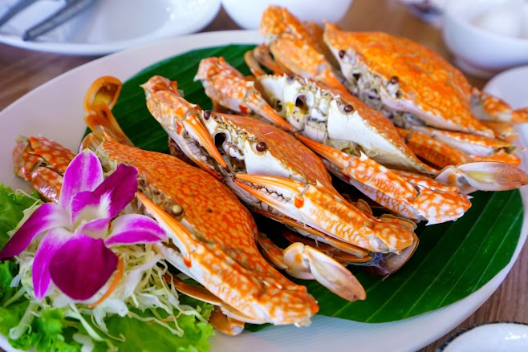
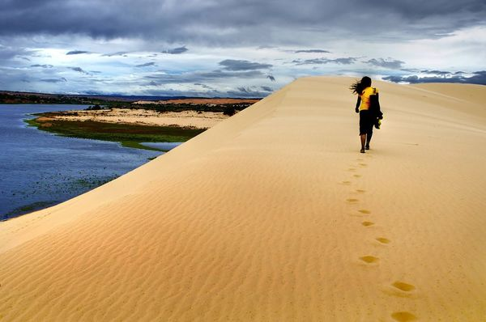
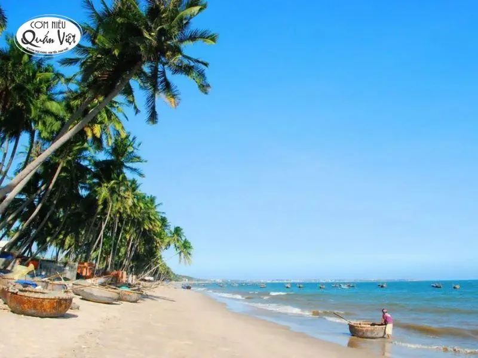
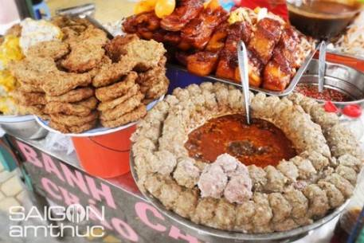

Đồi cát ven biển rộng lớn (Đồi Cát Bay, Bàu Trắng) được ví như "Sahara thu nhỏ".

Bãi Rạng Mũi Né kéo dài khoảng 5 km nằm liền kề Mũi Né, với dải cát trắng mịn.

Mang đậm đặc trưng vùng biển duyên hải Nam Trung Bộ, nổi tiếng với nước mắm truyền thống.


